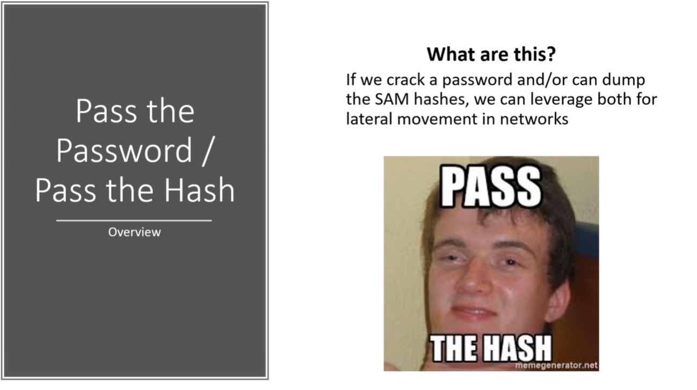

There is a tool that we're going to use called "crackmapexec"
It takes the username domain and password and throws that password all around the subnet here.


So playing off the different example of past the hash let's say that we have a "psexec"
here which we get on to this machine and we run a hash stump.
Will take the hash dump of FCastle as shown in the figure and capture the last bit (i.e. NTLM hash) and will try to pass that around.
User : Fcastle which is a local user.
As u can see we didn't have any luck on this one but these local accounts are very dangerous.
The issue is a lot of administrator will reuse the same account and password to set up machines.
So looking into these local hashes/ these local accounts are super importantas well.